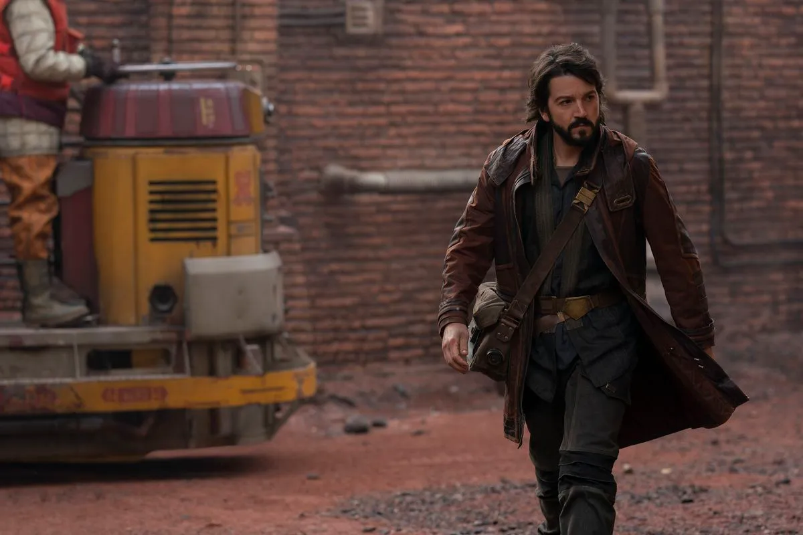

Biography
Cassian Jeron Andor was a human male operative of the Alliance to Restore the Republic who was remembered as a hero after his sacrifice to secure the Galactic Empire's Death Star plans at the Battle of Scarif. An accomplished spy and assassin, Andor was well-respected within the Rebellion and was trusted with leading Alliance Intelligence missions by Alliance High Command.
